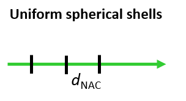
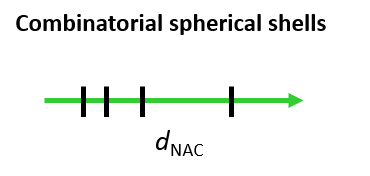

Analysis Modules¶
Featurize¶
Trajectories first need to be featurized with the *Featurized* module. Two methods are available and both are based strictly on distance metrics (angles, dihedrals, others can be coded): Both methods accept an arbitrary number of distances and outputs a dataframe that can be used for discretization.
Distance¶
Distances are calculated between all atom reference*selection pairs
{kind=link}
Discretize¶
Two discretization schemes are currently available, Uniform spherical shell discretization and Combinatorial user-defined spherical shell discretization. The Discretize object stores an internal copy of the provided feature data (DataFrame) and feature name (optional) to avoid passing project_system calls. Therefore, the module can take an externally-generated DataFrame, so long as the index information is consistent with the module operation.
Uniform spherical¶
{kind=link}
Discretization based in spherical shells generates spherical shells along a feature coordinate (i.e. if 1D). The module takes as input the thickness of the spherical shells and the limits of shell edges. Discretization can also be made for different subsets of the original feature DataFrame, by providing the controls of the start, stop and stride parameters.
Returns a shell profile DataFrame, containing the sampled frequency for each spherical shell (index) and for each feature.
Note: Subset time requires the user to check what are the frames present in the discretized (original featurized) DataFrames.
Combinatorial user-defined¶
{kind=link}
Discretize, for each frame, which combinations of shells are occupied by all ligands in the system (one state per frame)
The concept of regions is applied to the 1D $d_{NAC}$ reaction coordinate, whereby a region is defined as a spherical shell along the $d_{NAC}$ radius
Set the shell boundaries (limits, thickness). The minimum (0) and maximum (max) value are implicit.
E.g.: shells (4.5, 10, 12, 24) corresponds to: 1. shell [0, 4.5[ (A) 2. shell [4.5, 10[ (P) 3. shell [10, 12[ (E) 4. shell [10, 24[ (S) 5. shell [24, max[ (B)
Labels labels of each region are optional but recommended (otherwise reverts to numerical). Number of labels is plus one the number of defined regions.
Created on Fri Feb 5 11:59:08 2021
@author: hcarv
-
class
source.Discretize.Discretize(data, results, scalars=[], feature_name='undefined')¶ Bases:
objectBase class to discretize features. Takes as input a dictionary of features, each containing a dictionary for each parameter and raw_data
-
combinatorial(shells, level=3, start=0, stop=10, stride=1, labels=None)¶ Function to generate combinatorial encoding of shells into states. Discretization is made based on combination of shells. Not sensitive to which shell a given molecule is at each frame. Produces equal-sized strings for all parameters. Static methods defined in tools.Functions are employed here.
- shellsarray
The array of shell boundaries.
- levelTYPE, optional
DESCRIPTION. The default is 3.
- startTYPE, optional
DESCRIPTION. The default is 0.
- stopTYPE, optional
DESCRIPTION. The default is -1.
- strideTYPE, optional
DESCRIPTION. The default is 1.
- labelsTYPE, optional
The shell labels (+1 shells). Method will resolve inconsistencies by reverting to numeric label.
- feature_dfdataframe
Dataframe of discretized features.
-
dG_calculation(input_df=None, start=0, stop=- 1, stride=1, n_cores=- 1, bulk=30, 41, level=2, resolution=0.5, shells=[], feature_name=None, describe='mean', quantiles=[0.01, 0.5, 0.75, 0.99])¶ Function to get free energy values from multiple shell profiles (1D histogram). NOTE: The “ranges_bulk” should be carefully chosen for each system.
NOTES: Calculates the theoretical NAC values in “bulk” in a spherical shell of size given by “ranges”. The output is N - 1 compared to N values in ranges, so an additional value of “resolution” is added for equivalence. N_ref= lambda ranges, bulk_value: np.log(((4.0/3.0)*np.pi)*np.diff(np.power(np.append(ranges, ranges[-1] + resolution), 3.0))*6.022*bulk_value*factor)
- input_dfTYPE, optional
DESCRIPTION. The default is None.
- startTYPE, optional
DESCRIPTION. The default is 0.
- stopTYPE, optional
DESCRIPTION. The default is -1.
- strideTYPE, optional
DESCRIPTION. The default is 1.
- n_coresTYPE, optional
DESCRIPTION. The default is -1.
- bulkTYPE, optional
DESCRIPTION. The default is (30, 41).
- levelTYPE, optional
DESCRIPTION. The default is 2.
- resolutionTYPE, optional
DESCRIPTION. The default is 0.5.
- shellsTYPE, optional
DESCRIPTION. The default is [].
- feature_nameTYPE, optional
DESCRIPTION. The default is None.
- describeTYPE, optional
DESCRIPTION. The default is ‘mean’.
- quantilesTYPE, optional
DESCRIPTION. The default is [0.01,0.5,0.75,0.99].
None.
-
static
get_fittings(iterable, N_enz, ranges, bulk_range, resolution, name_fit)¶
-
static
get_sim_counts(iterable_df, iterable, quantiles, describe)¶
-
plot(input_df=None, level=2, subplots_=True)¶
-
static
shell_calculation(series_value, specs=())¶ The workhorse function for shell calculation. Returns a 1D histogram as a Series using parameters handed by specs (ranges, center of bins).
- series_valueTYPE
DESCRIPTION.
- specsTYPE, optional
DESCRIPTION. The default is ().
- hist_dfTYPE
DESCRIPTION.
-
shell_profile(thickness=0.5, limits=0, 150, level=2, start=0, stop=- 1, stride=1, n_cores=- 1)¶ Generate the discretization feature into shells=(min(“limits”), max(“limits”), “thickness”).
- thicknessTYPE, optional
DESCRIPTION. The default is 0.5.
- limitsTYPE, optional
DESCRIPTION. The default is (0,150).
- levelint, optional
The level for data agreggation. The default is 2 (molecule).
- labelsTYPE, optional
DESCRIPTION. The default is None.
- shellsTYPE, optional
DESCRIPTION. The default is None.
- n_coresint
The number of processes.
- TYPE
DESCRIPTION.
-